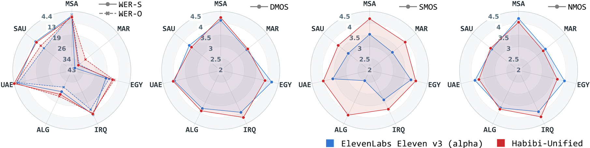

Habibi: Laying the Open-Source Foundation of Unified-Dialectal Arabic Speech Synthesis
Abstract Arabic spans over 30 spoken varieties, yet no open-source text-to-speech system unifies them. Key barriers include substantial cross-dialect lexical and phonological divergence, scarce synthesis-grade data, and the absence of a standardized multi-dialect evaluation benchmark. We present Habibi, a unified-dialectal Arabic TTS framework that addresses all three. Through a multi-step curation pipeline, we repurpose open-source ASR corpora into TTS training data covering 12+ regional dialects. A linguistically-informed curriculum learning strategy—progressing from Modern Standard Arabic to dialectal data—enables robust zero-shot synthesis without text diacritization. We further release the first standardized multi-dialect Arabic TTS benchmark, comprising over 11,000 utterances across 7 dialect subsets with manually verified transcripts. On this benchmark, our unified model matches or surpasses per-dialect specialized models. Both automatic metrics and human evaluations confirm that Habibi is highly competitive with ElevenLabs' Eleven v3 (alpha) in intelligibility, speaker similarity, and naturalness. Extensive ablations (~8,000 H100 GPU hours, 30+ configurations) validate each design choice. We open-source all checkpoints, training and inference code, and benchmark data—the first such release for multi-dialect Arabic TTS.

Figure 1 Our open-source unified-dialectal model (Habibi-Unified) vs. ElevenLabs' commercial Eleven v3 (alpha).
WER-S/O: word error rates from two different ASR systems. D/S/N-MOS: dialect pronunciation accuracy, speaker similarity, and naturalness.
Contents
This page is for research demonstration purposes only.
Zero-Shot Speech Synthesis Performance
| ID | Prompt | 11Labs-3a | Habibi (Ours) |
|---|---|---|---|
| MSA | انتهاكات نجد لها مثيلا في بلد آخر لا صوت يعلو فيه هذه الأيام فوق صوت الرصاص ودوي القذائف والغارات | ||
| SAU | Najdi |
اعزمك انت والاهل كلهم والاسرة الكريمة تجون على ملكة ولدي فهد على بنت اخوي عبد الله ان شاء الله الجمعة الجاية والله يحييكم تشرفونا | |
| Hijazi |
سلمى يا حلوة انتي اكتشفتي الحلا بس شميته ما اكلتيه ليه ما اكلتي من الحلويات سلمى | ||
| Gulf |
اداوم من الصبح وارجع الساعة ثنتين وما بعد الساعة ثنتين هذا وقت ملكي انا بروحي | ||
| UAE | لا تظنون أن العقل شيء سيء بل على العكس تماما هو أهم ما يملك الإنسان لكن اللي نريد أن نقوله في هذه الحلقة | ||
| ALG | لكن المشكل تاعو أننا نلقاو هاد لمعالج في هواتف أرخص شوية، هذا فقط العيب اللي فيه لكن هاتف محترم ويستحق الشراء. | ||
| IRQ | ما معلوم ااا أشقد الوقت بالضبظ لأنه هناك لجان تفتيش راح تجي وراح تبدأ التحقيقات أيضا، فأعتقد يحتاج شوية وقت. | ||
| EGY | مش عشان يلاقوا يقين يخصها بل عشان زي ما تقولوا كده همّ بيحبوا عدم اليقين، بيرتاحوا في قلة الراحة | ||
| MAR | أو جوج ملاعق ديال سكر سنيدة غادي نضيفهم على الخليط كيفما كتشوفو معايا | ||
Code-Switching Performance
| Language | Prompt | Habibi (Ours) | |
|---|---|---|---|
| UAE + English | أهلًا حياكم الله في حلقة يديدة من podcast think with Hessa أتمنى تكونون بخير ومستعدين حق حلقة اليوم. | ||
| ولو ساعدتني ولا لا. basically بخبركم عن حياتي المالية، my financial situation. | |||
| ALG + French | La dernière fois كي جيتي عندنا للشروق البيرو. | ||
| "ولا تلقاها مثبتة في أول تعليق في les commentaire تلظ عليه، تتفرج الفيديو كامل في القناة الثانية." | |||